Vamos a suponer que necesitamos tomar un total de 6 pastillas y debemos tomar la medicina cada 8 horas.
Podemos crear recordatorios uno por uno y perder tiempo haciendo cálculos mentales o podemos usar las funciones de SECURElogBook que nos facilitarán las cosas. También podemos verificar si lo que hemos hecho es correcto.
Para este ejemplo, vamos a usar un caso donde ya tenemos algunos registros creados (A, B, C, D, E, F). Esos registros simularán registros que ya puedes tener:
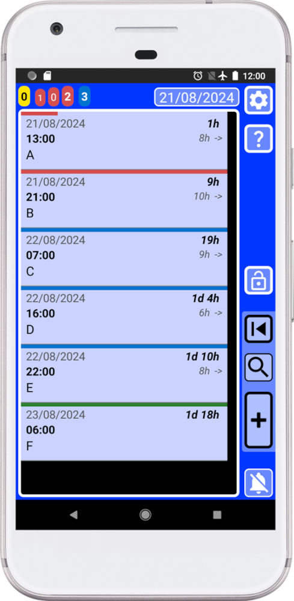
1. Lo primero que necesitamos hacer es abrir la ventana del creador (verde) presionando el botón :
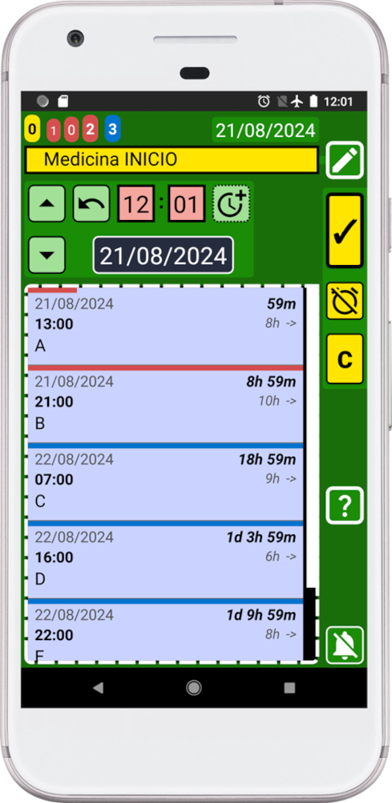
Agrega “Medicina INICIO” como texto para este registro.
2. Supongamos que ya hemos tomado la primera pastilla. Para indicarlo, presiona el botón
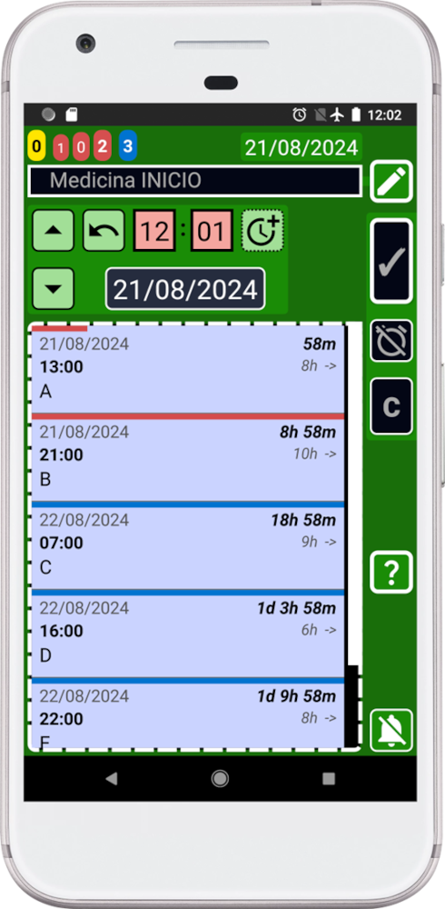
Los controles cambiaron de amarillo a negro para indicar que tomamos la primera pastilla (tarea completada).
3. Para crear el primer recordatorio, necesitamos presionar el botón 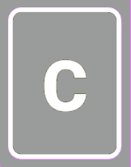 (botón de copiar):

Observa que hemos creado un registro negro, pasado y completado (primer registro en la lista).
Debido a que no podemos tener dos registros con el mismo tiempo, los botones de registro ahora son rojos. Para poder copiar o guardar un registro debemos cambiar la hora.
Ahora vamos a crear el siguiente recordatorio.
4. Primero cambia el texto del recordatorio de “Medicina INICIO” a “Medicina”.
5. Ahora necesitamos indicar que el registro que vamos a crear no está completado. Para hacerlo, presiona el botón
Ahora el botón será amarillo, porque el registro que estamos creando está en el pasado y no está completado.
6. Mantén presionado el botón 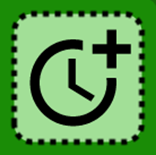 para abrir la ventana AÑADIR/QUITAR TIEMPO y agregar 8h al registro:
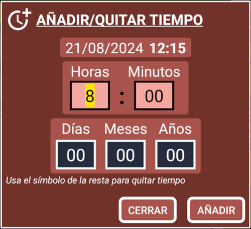
Ahora que hemos agregado tiempo, el registro está configurado en el futuro, por esta razón el botón se vuelve azul (registro futuro no completado = alarma activada).
Después de cambiar la hora, agregando 8h, los botones de los registros ya no estarán en rojo (bloqueados):
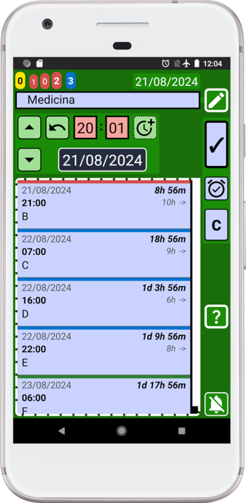
Los botones de los registros ahora son azules, para indicar que podemos crear un recordatorio en el futuro (azul).
7. Crea el nuevo recordatorio presionando el botón (botón de copiar):
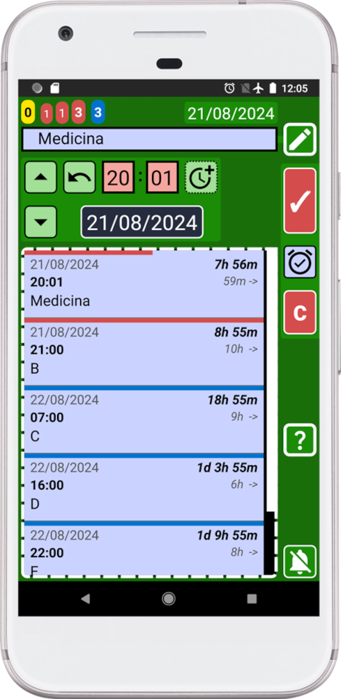
8. Repite los pasos 6 y 7 tres veces más hasta que tengamos 5 recordatorios.
9. Para crear el último recordatorio, cambia el texto del recordatorio de “Medicina” a “Fin de Medicina”.
10. Mantén presionado el botón para abrir la ventana AÑADIR/QUITAR TIEMPO y agregar 8h al registro:
11. Crea el último recordatorio presionando el botón (botón de copiar):
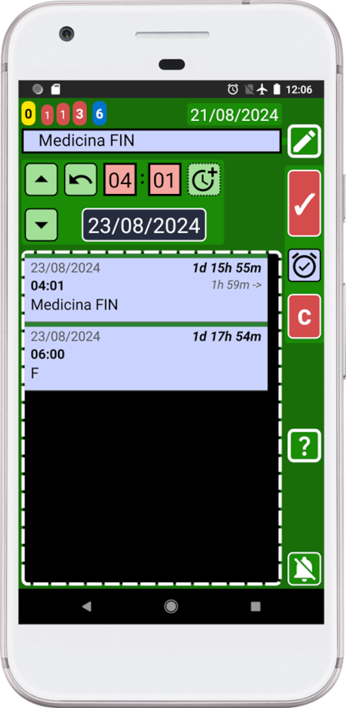
12. Presiona el botón de retroceso en tu dispositivo para volver a la ventana principal (azul).
Ahora que has creado todos los recordatorios, ¿cómo puedes verificar que has hecho todo correctamente? Hasta ahora verás algo como esto:
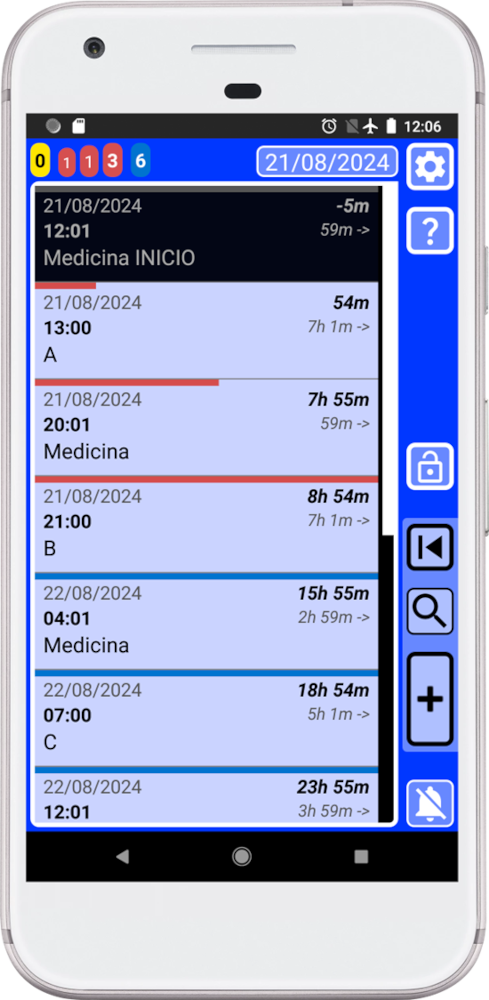
Cuando todos los registros están juntos es difícil verificar si todo está bien. ¿Cómo podemos verificar que no cometimos un error? La respuesta a esa pregunta es el sistema de búsqueda.
Para abrir la búsqueda, presiona el botón y busca “Medicina”:
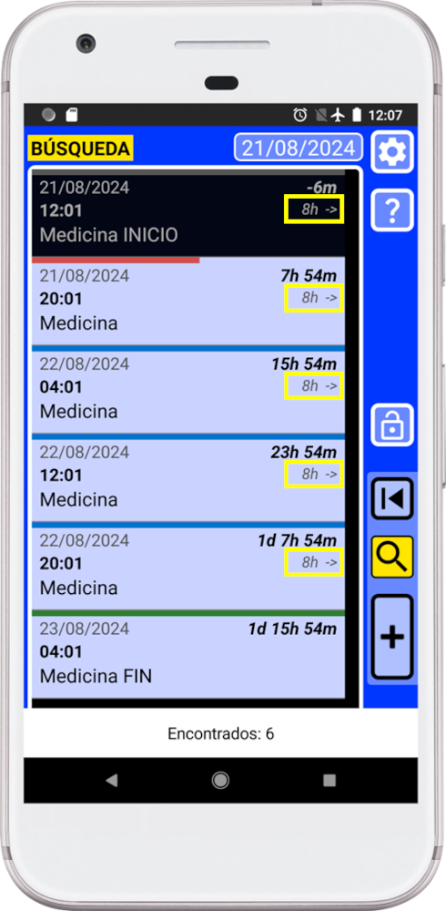
Los tiempos entre los registros están resaltados en amarillo. Nota cómo el mensaje en la parte inferior de la pantalla indica que se encontraron 6 registros.
También puedes abrir nuevamente la ventana de búsqueda para ver ese número al final del título (resaltado en amarillo):
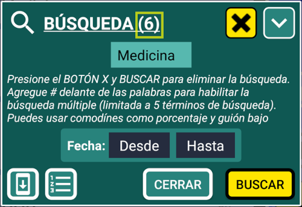
Como podemos ver, la búsqueda de SECURElogBook nos permite ver el número de registros que contienen “Medicina”, 6 registros. Pero también, en el lado derecho de cada registro, indica el tiempo entre el registro y el siguiente. En este caso siempre son 8 horas.
Ahora podemos confirmar que tenemos 6 registros, para 6 pastillas, y el tiempo entre ellos es de 8h.
SECURElogBook te alertará cuando sea el momento de tomar cada pastilla usando la alarma. Además, cuando esto suceda, el recordatorio se resaltará en amarillo. Luego necesitarás cambiar el registro a negro para indicar que has tomado la medicación. Finalmente, toda la información se guardará para ti en caso de que la necesites en el futuro. ¡Con SECURElogBook es imposible olvidar las cosas!
SECURElogBook, cuando la información entra, las preocupaciones salen! 😉